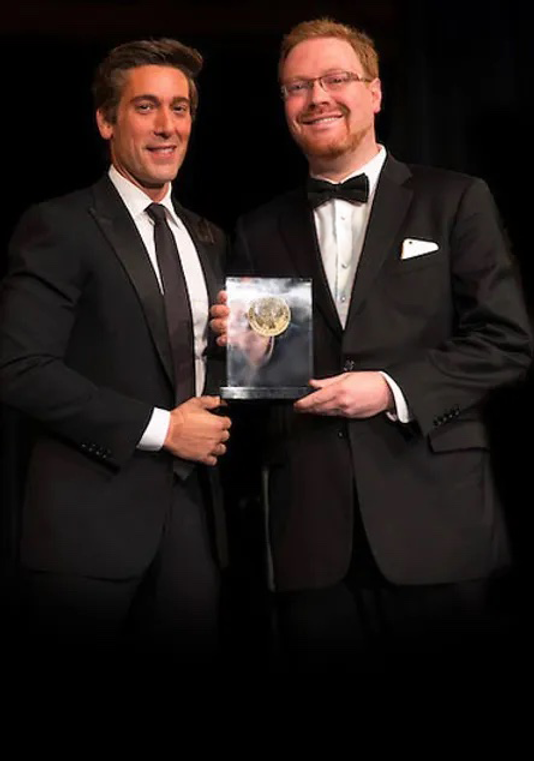

About
I'm a reporter with Bloomberg Law in Washington, D.C., where I host and produce UnCommon Law, a narrative audio program now in its eleventh season. My reporting has won the ABA Silver Gavel Award, the Edward R. Murrow Award, two Jesse H. Neal Awards, and more.
Before Bloomberg, I produced stories for NPR's All Things Considered, Weekend Edition, Morning Edition and Hidden Brain. I also reported hundreds of spots for NPR's hourly newscast. At WAMU 88.5, I co-created Unprecedented, a podcast about the ordinary people behind landmark First Amendment cases at the Supreme Court, with appearances by NPR's Nina Totenberg. I also co-founded Booksmart Studios, the first podcast studio launched in partnership with Substack, where I served as executive producer.
In a past life, I was a telecommunications attorney representing major carriers, broadcasters and cable companies. I hold a J.D. from Georgetown University Law Center and a B.A. in political science from the University of Michigan. In a past life, I was a telecommunications reporter covering the intersection of technology and policy. Go Blue!

Accepting the Edward R. Murrow Award from ABC's David MuirBloomberg Law
UnCommon Law
ABA Silver Gavel Award Winner
Each season of UnCommon Law takes listeners inside a different corner of the legal system through deeply reported, scripted episodes with original interviews, archival audio, and cinematic sound design.
Season 11: Justice Transformed In Production
An investigation into the transformation of the Department of Justice. Featuring interviews with former Attorneys General, career prosecutors who resigned on principle, and legal scholars debating the limits of presidential power over federal law enforcement.
Recent Seasons
Listen
WAMU 88.5 / NPR
Unprecedented
Silver Gavel Finalist
Unprecedented tells the raw and emotional stories of ordinary people who, while pursuing justice all the way to the Supreme Court, defined the limits of our First Amendment rights. Co-hosted with Michael Vuolo, with special appearances by NPR's Nina Totenberg.
Featured Cases
Listen
More Work
What's With Washington?
A listener-driven series exploring the quirks, history, and hidden stories of the Washington, D.C. region.
All Things Considered
Produced feature stories and reported hundreds of spots for NPR's flagship programs, reaching millions of listeners nationwide. Ranging from the serious to the silly.
Feature Reporting
Award-winning features on the Washington region. Stories on suicide prevention, marijuana decriminalization, charter school life, and the African-American ring shout tradition. Rebroadcast nationally on WBUR's Here and Now.
Browse stories →Print & Digital
Written journalism spanning technology policy, culture, and law. From daily tech reporting at Communications Daily to feature writing at Slate and The Detroit News.
Awards & Recognition
Get in Touch
For interview requests, press inquiries, story tips, speaking engagements, or just to say hello.